El primer ministro francés , el socialista Lionel Jospin , intenta recuperar la iniciativa política y el apoyo del electorado tradicional de izquierdas destinando los frutos de la bonanza económica a gastos públicos y recortes de impuestos.
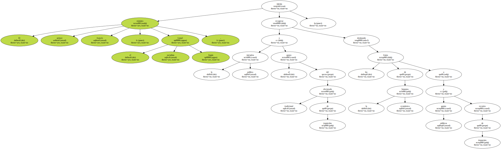A expensas de la reducción del déficit público , Jospin se plegó anoche a las crecientes presiones de los franceses que reclamaban un reparto del pastel económico con la promesa de recortes fiscales adicionales este año por valor de 6.097,9 millones de euros.
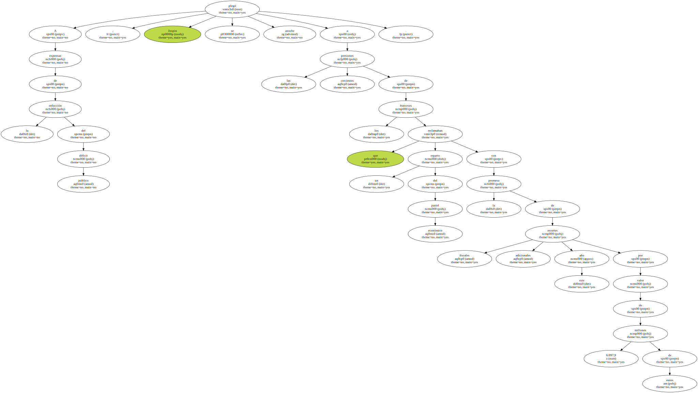Para calmar otros posibles temores , el titular de Economía , Christian Sautter , se apresuró hoy a decir que este año se reducirá el déficit público a un 1,5 por ciento del PIB ( Producto Interior Bruto ) , en lugar de a un 1,7 por ciento previsto inicialmente.
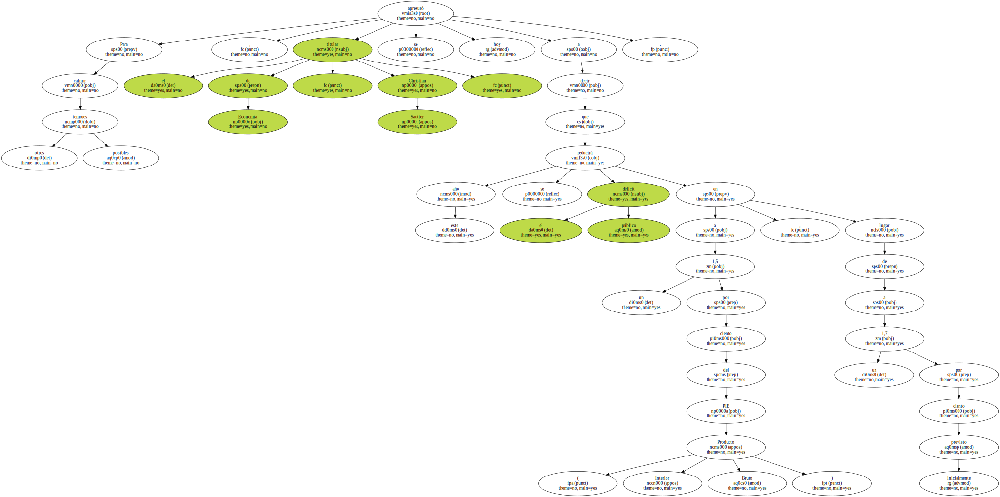El Gobierno repartirá este año el " bote " de la recaudación fiscal inesperada ( 7.622,4 millones de euros ) : 1.524,4 millones para gastos públicos , y 6.097,9 millones en recortes adicionales de impuestos , entre ellos , Vivienda y Renta - por 1.676,9 millones cada uno - y otros 2.774 millones de rebaja del impuesto al valor añadido ( IVA ).
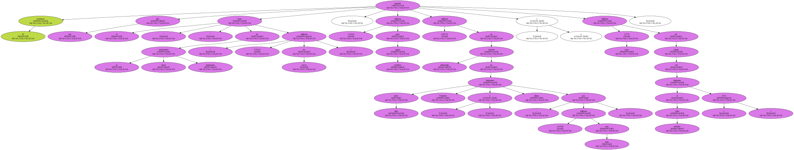Jospin busca con este guiño aplacar el clima de crispación social que en los últimos meses ha suscitado la gestión de su Gabinete y reconquistar , al mismo tiempo , al electorado en el que su popularidad se ha visto más disminuida , las capas más bajas.
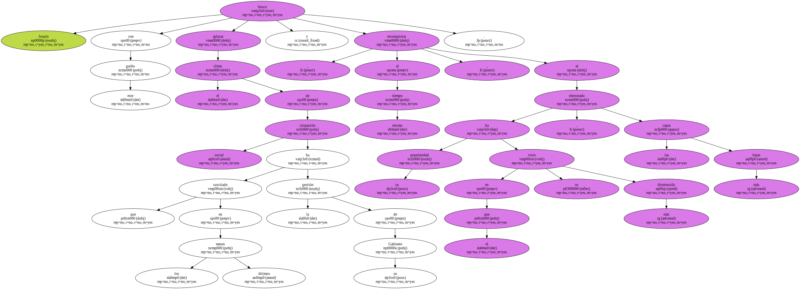En total , el Ejecutivo de coalición de izquierdas rebajará los impuestos en el 2000 por un total de cerca 12.195 millones de euros.
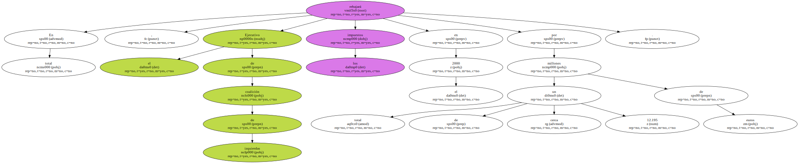A dos años de las elecciones presidenciales y legislativas , el primer ministro se ha fijado como meta bajar al final de su mandato el nivel de retenciones obligatorias , que alcanzó un récord en 1999 , al de 1995 ( un 43,7 por ciento ) , cuando el neogaullista Jacques Chirac se convirtió en " número uno " del Estado.
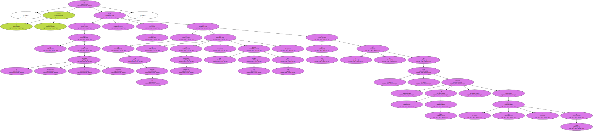El alivio fiscal beneficiará sobre todo a los hogares más modestos , un componente esencial de los votantes de izquierdas , mientras que las clases medias deberán , de momento , esperar , según explicó el primer ministro en su primera intervención televisada en seis meses , seguida por 13 millones de telespectadores.

También cedió al envite lanzado ayer por los actores de la enseñanza pública con protestas masivas en toda Francia , al anunciar el desbloqueo " urgente " de 152,45 millones de euros y un plan plurianual para la gestión de los medios de la Educación nacional.
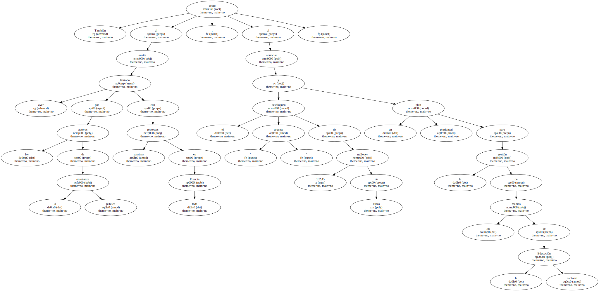Con regocijo , el primer ministro desmenuzó ante las cámaras los méritos económicos de su gestión y tildó las protestas de " fenómenos de impaciencia " , al tiempo que justificó la situación : " prefiero ser responsable de un " bote " que de un agujero en las arcas del Estado ".
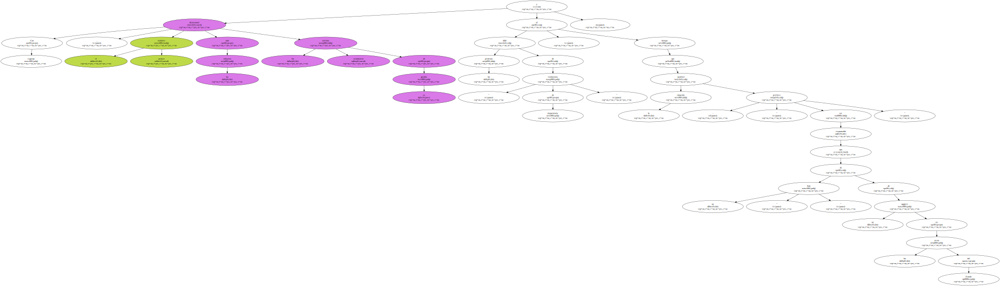Con este discurso claramente " electoralista " , coinciden en apuntar hoy los analistas , Jospin dio un golpe de timón al despojarse de su talante de " gestor ortodoxo " del Estado y erigirse en repartidor de millardos para la administración pública.
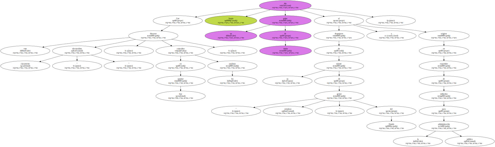Con la promesa de que el Estado gastará más y quitará menos , el jefe del Gobierno se apunta el mérito muy " político " de deshacer parcialmente lo que en su día hicieran los ex primer ministros neogaullistas Alain Juppé ( quien en 1995 subió el IVA en un punto , que ahora baja Jospin ) y Chirac , indicó el canal televisivo " LCI ".
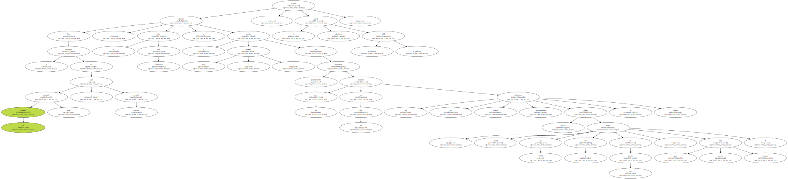Otros analistas destacan el " viraje " comentando que Jospin defendía con tono liberal hace seis meses que " el Estado no puede resolver todo " tras el anuncio de despidos masivos de Michelin y ahora reparte " a diestro y siniestro " los fondos públicos.
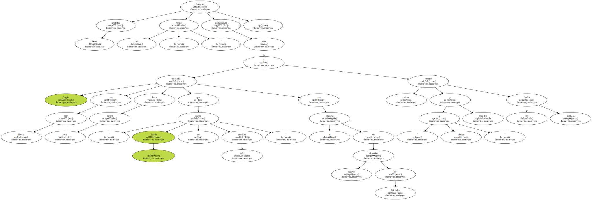Una enardecida oposición conservadora , que acusa a Jospin de inmovilismo para no dañar su imagen de " presidenciable " , denunció hoy las promesas de anoche como una " propina " , " migajas " y no una verdadera política de reformas.
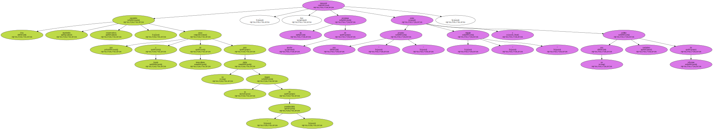" El primer ministro redistribuye con tacañería los frutos del crecimiento sin ninguna reforma de fondo y sin perspectiva de futuro . Jospin devuelve el 10 por ciento del dinero que ha quitado a los franceses " , indicó Alain Madelin , líder de Democracia Liberal.

Bajo el titular " Jospin ,obligado a bajar los impuestos " , el diario conservador " Le Figaro " indica que " este Gobierno de izquierda se enfrenta ahora a sus electores " y el primer ministro " tomó la palabra el día en el que las principales cohortes de su electorado desfilaban en la calle para expresar su cólera ".
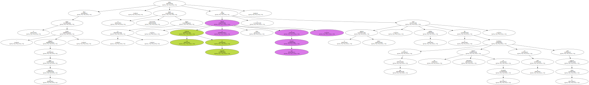" Obligado por una situación que contribuyó a crear con una política de brazos cruzados , Jospin ha salido del atolladero con habilidad ( ... ) . La acumulación de impaciencia ha hecho un favor al primer ministro al forzarle a entrar en un terreno que no es tradicionalmente el suyo : la rebaja de la presión fiscal " , afirma el diario izquierdista " Liberation ".
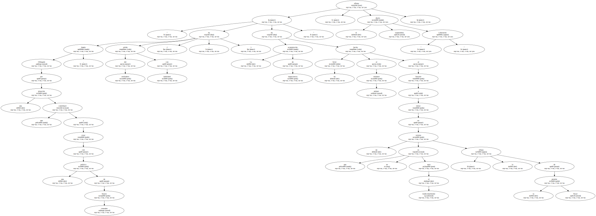